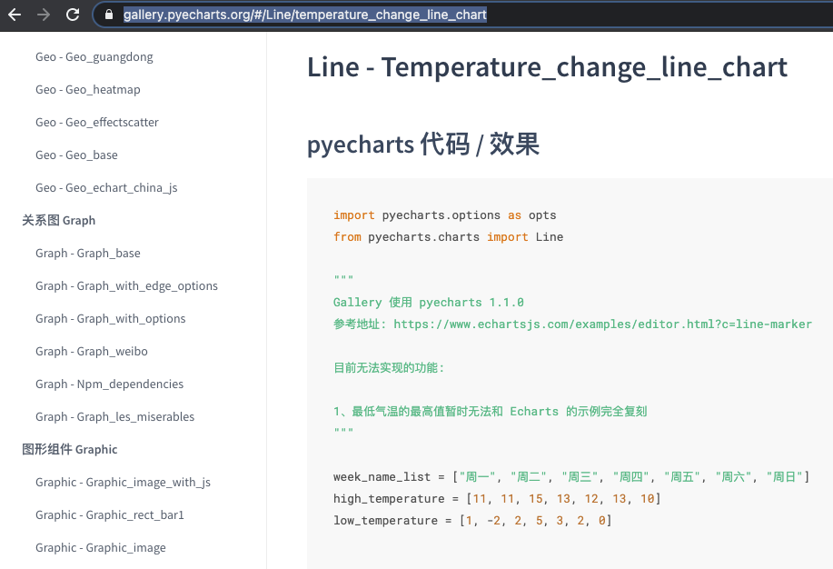

- 00 导读 入门Python的必备知识.md.html
- 00 开篇词 重复工作这么多，怎样才能提高工作效率？.md.html
- 01 拆分与合并：如何快速地批量处理内容相似的Excel？.md.html
- 02 善用Python扩展库：如何批量合并多个文档？.md.html
- 03 图片转文字：如何提高识别准确率？.md.html
- 04 函数与字典：如何实现多次替换.md.html
- 05 图像处理库：如何实现长图拼接？.md.html
- 06 jieba分词：如何基于感情色彩进行单词数量统计？.md.html
- 07 快速读写文件：如何实现跨文件的字数统计？.md.html
- 08 正则表达式：如何提高搜索内容的精确度？.md.html
- 09 扩展搜索：如何快速找到想要的文件？.md.html
- 10 按指定顺序给词语排序，提高查找效率.md.html
- 11 通过程序并行计算，避免CPU资源浪费.md.html
- 12 文本处理函数：三招解决数据对齐问题.md.html
- 13 Excel插件：如何扩展Excel的基本功能？.md.html
- 14 VBA脚本编程：如何扩展Excel，实现文件的批量打印？.md.html
- 15 PowerShell脚本：如何实现文件批量处理的自动化？.md.html
- 16 循环与文件目录管理：如何实现文件的批量重命名？.md.html
- 17 不同操作系统下，如何通过网络同步文件？.md.html
- 18 http库：如何批量下载在线内容，解放鼠标（上）？.md.html
- 19 http库：如何批量下载在线内容，解放鼠标（下）？.md.html
- 20 不同文件混在一起，怎么快速分类？.md.html
- 21 SQLite文本数据库：如何进行数据管理（上）？.md.html
- 22 SQLite文本数据库：如何进行数据管理（下）？.md.html
- 23 怎么用数据透视表更直观地展示汇报成果？.md.html
- 24 条形、饼状、柱状图最适合用在什么场景下？.md.html
- 25 图表库：想要生成动态图表，用Echarts就够了.md.html
- 26 快速提取图片中的色块，模仿一张大师的照片.md.html
- 27 zipfile压缩库：如何给数据压缩&加密备份？.md.html
- 28 Celery库：让计算机定时执行任务，解放人力.md.html
- 29 网络和邮件库：定时收发邮件，减少手动操作.md.html
- 30 怎么快速把任意文件格式转成PDF，并批量加水印？.md.html
- 春节特别放送1 实体水果店转线上销售的数据统计问题.md.html
- 春节特别放送2 用自顶至底的思路解决数据统计问题.md.html
- 春节特别放送3 揭晓项目作业的答案.md.html
- 结束语 和我一起成为10X效率职场人.md.html
- 捐赠
25 图表库：想要生成动态图表，用Echarts就够了
你好，我是尹会生。
在上一讲中，我们学习了怎么使用Seaborn来生成图片格式的图表。事实上，图片格式的图表也被称作静态图表，它能通过数据来更直观地展示结果。
不过很多时候，我们不仅要通过图片直观地展示数据，还要让图片容纳更多种类、更丰富的数据信息。这个时候，静态图表能展示的结果就十分有限了。比如你希望能给领导和同事在会议上演示数据的分析结果时，需要通过一张图来容纳更多的数据。
别担心，这时候我们可以采用动态图表的方法，来增强图片的表现力。因为动态图表展示的结果，相当于静态图表和数据这两者的混合，所以容纳的内容信息也就更丰富。
举个例子，我希望用一张图片来展示全国新冠确诊病例的分布。如果采用动态图，我就可以把鼠标移动到我需要查看的省份上面，显示该地区的确诊人数等相关信息。
就像下面这张截图一样。这张分布图不但基于颜色深浅显示了确诊人数的变化，还能通过鼠标悬停来显示具体的数据。使用起来是不是很方便？
这张动态图表是使用HTML网页文件格式来展示的。同时，它也采用了Python的库pyecharts进行了绘制，其中的图形、数据都可以基于你的需要进行调整。最重要的是，绘制这样一张图片，操作起来和seaborn生成静态图表一样简单。
那接下来，我就为你具体讲解一下怎么使用pyecharts来绘制疫情实时地图，并以此为例，让你掌握怎么通过pyecharts来绘制其他的动态图。
要想使用pyecharts绘制动态图，必须要先对它进行安装，再为pyecharts加载数据，最后才能进行绘制动态图。所以我们参考静态图表的学习方法，我来先带你从安装开始学习pyecharts。
安装：使用pip安装pyecharts
pyecharts库和它的安装包同名，因此你依旧可以使用pip命令进行安装。不过在这一步，我们需要验证pyecharts库是否被成功安装。这是非常重要的一步。
因为和之前安装的软件包最大的不同是，pyecharts库的依赖包非常多。这里我要对依赖包的概念多做些补充。
依赖包是指软件为了支持某些功能，而这一功能刚好有其他的第三方库已经实现了，那么该软件就不必再次编写该功能。但是你在使用pyecharts库时，它所依赖的库也必须被安装在你的电脑上面，你才能正常使用它。
这就像你操作Excel在你的脚本使用了“xlwt”库，而其他人使用你的脚本，必须也在他的电脑上安装这个库是相同的道理。因此当你对pyecharts进行安装的时候，会有很多被依赖的安装包一起被安装在你的电脑上。不过不用担心，依赖包并不影响pyecharts库的安装。
由于安装pyecharts的过程，pip命令需要同时安装很多依赖包，你大概率还会在安装过程看到“Requirement already satisfied”这样的提示，这个提示是指你安装的库已经被安装在你的计算机中，有可能是你之前使用pip命令安装的这些被依赖的包，也有可能是因为其他库的依赖，它们被安装到了你的计算机中，但是这些提示都不影响pyecharts库的安装。这些提示也并非安装错误，你可以直接忽略该提示即可。
不过依赖包过多，虽然不影响安装，但是会带来一个主要的问题。那就是在安装的终端界面，会显示很多提示信息，如果提示信息超过一个屏幕的长度，会把安装成功或失败的安装结果覆盖掉，导致你很难确认pyecharts是否安装成功，因此我们需要一种可以确认pyecharts乃至任何一个第三方库是否被成功安装在当前计算机的方法。
想要验证pyecharts库是否被成功安装，可以在命令行执行下面这个命令，来帮助你验证：
SHELL$ pip3 freeze | grep pyecharts
pyecharts==1.9.0
在这条命令中，有三个地方需要你格外注意：
- 命令中的“freeze”，用于查看pip命令在当前计算机安装的所有软件包都有哪些；
- “|”叫做管道符，用于连接左右两条命令，并把左边命令的执行结果作为右边命令的输出；
- 通过grep命令，过滤只包含“pyecharts”的一行。如果你不使用grep命令，“pip3 freeze”会将当前计算机中所有的第三方库及其版本显示在终端上，如果第三方库非常多，很难手动确认pyecharts是否被成功安装了。
这就是查看某一个库是否被成功安装在当前计算机，以及查看被安装版本的命令，我经常使用这一命令来确认依赖关系较多的库是否被成功安装。
不过你肯定会有疑问了，查看库是否安装这一做法是为了避免有些库存在不兼容，导致安装失败。那为什么还要查看安装的版本呢？
主要是考虑到版本兼容问题。我以pyecharts举例，pyecharts是Python和Echarts的结合体（Echarts是由百度开源的交互式可视化图表工具，基于JavaScript脚本实现）。因此Python提供的接口更新和Echarts工具更新，都会导致使用pyecharts的函数不同。而pyecharts 分为 v0.5.X 和 v1 两个大版本，且v0.5.X 和 v1 不兼容，v1 又是一个全新的版本，这两个版本支持的Python最低版本也不同。简而言之：
- v0.5.X 版本的pyecharts能支持Python2.7、Python3.4及以上版本；
- v1 版本的pyecharts能支持Python3.6及以上版本。
如果基于公司规定，你必须使用默认的Python3.4版本的话，可以使用如下命令安装0.5版本的pyecharts：
pip install pyecharts==0.5
解决完pyecharts的版本兼容问题后，相信你的pyecharts的正常运行肯定不在话下了，那接下来我就带你学习怎么给pyecharts加载数据。
数据：为pyecharts加载数据
在给pyecharts加载数据前，我们还要确认数据的格式和数据来源。这样做是为了把从网站中得到的数据转换为符合pyecharts绘图的数据。
- 数据格式，用于传入数据前要把来源数据转换成被pyecharts支持的格式；
- 数据来源，决定数据的准确性和详细程度。
例如网站中的数据包含了省、市、区的确诊人数，以及成功被治愈的人数，而我们只需要每个省被确诊的人数。因此数据格式和来源都需要经过你的精心处理，才能被pyecharts展示给使用者。
确认数据的格式和来源
pyecharts的数据格式，要基于不同的图形类型，使用不同的格式。但是一般情况下，是多行多列组成的类似Excel表格的格式，这种格式在Python中一般使用嵌套元组的形式进行保存。
以绘制疫情地图数据为例，我们需要每个省的名称以及现有确诊人数，那么我们可以把省的名称和人数放在一个元组中，并把多个省的数据再组成一个更大的元组，作为pyecharts的源数据。
这种并列数据，你可能第一时间想到的不是元组，而是列表，但是我要告诉你的是，列表的查询效率要远远低于元组。为了让你的图形在展示数据时能够更加流畅，我更建议你使用元组，具体方法是在把列表作为源数据使用前，使用“tuple()”函数把列表类型转换为元组。
确定数据格式之后，我们还需要一个数据来源，为了确保数据的准确性和实时性，我们得从腾讯新闻的网站引入外部数据，数据地址的链接我先贴出来，接下来我再给你讲解一下怎么得到数据地址。
为了得到数据的地址，我分析了网站加载数据的过程，找到了数据接口的地址。这个分析方法你学会以后，也可以应用到其他需要抓取网页数据的工作中。我把抓取的步骤分成四步，分别是开启浏览器调试、请求网页、确认接口和确认返回数据。
先看第一步，开启浏览器调试。这一步骤是为了在请求过程中，能记录网页都请求了哪些数据接口。
以Chrome浏览器为例，使用快捷键F12可以打开调试模式，把选项卡调整至“Network”，调整后就进入接口的监听状态了。
第二步，请求网页。以腾讯疫情实时网页为例，可以在地址栏输入“https://news.qq.com/zt2020/page/feiyan.htm#/”，输入后，调试界面会显示该网页都请求了哪些地址。我把调试页面放在下方供你参考。
截图的左侧就是请求的所有数据接口的地址，从最开始请求的地址向下找，除了JS、JPG等网页图片和样式数据外，其他的请求接口就是我们要重点查看的接口。
第三步，确认接。由于网页中包含了多次从“getOnsInfo”接口取得数据，所以要逐个查看接口的返回数据。你可以通过鼠标点击接口的链接，然后再点击“Response”按钮，最后根据返回接口的返回内容，查看是否为“疫情实时数据”。
第四部，确认返回数据。当你从接口初步确认了该数据是“疫情实时数据”后，可以把该地址复制到浏览器中，进行访问。访问的具体办法就是通过模拟网页请求接口，这样就可以得到以下数据了。我将数据放在截图中，供你参考。
截图中的数据，可以通过查找省份和数据来确认数据的正确性。如果数据不正确，你需要回到第二步，再重新找下一个接口。
调整数据格式
当你确认了数据格式和数据源之后，接下来就需要把数据源的格式转换为pyecharts需要的嵌套元组格式。
首先，我先来分析通过网页直接请求数据接口之后的格式，请求后，你会看到网页上面的格式类似于Python的多个字典嵌套在一起，这种格式被称作JSON格式。在Python中你可以通过“json”库去解析这种格式，并把它转换为Python中的字典。解析的方法如下：
import requests
import json
url = 'https://view.inews.qq.com/g2/getOnsInfo?name=disease_h5'
data = requests.get(url)
alldata = json.loads(data.json()['data']
在这段代码中，我使用了requests.get()方法获取了接口的内容，并使用json.loads()方法把接口的数据转换成了字典。由于所有的数据都在下标为“data”的字典中，通过“字典[‘data’]”取得字典值的用法，把所有数据存放到alldata变量中。
接下来，要把alldata变量中的字典转换为嵌套元组形式，这个转换过程需要遍历字典，来取得省份名称和对应的确诊人数。不过为了保存多个省份，我们还需要使用一个新的列表来存储多个省份的数据。最后再把列表转换为元组，作为pyecharts的绘图数据使用。我们依次来看一下：
chinadata = []
for province in alldata['areaTree'][0]['children']:
provincedata = (
province['name'],
province['total']['nowConfirm']
)
chinadata.append(provincedata)
在代码的第2行，我使用了for循环，从alldata字典的多层嵌套结构中取出省份和该省份的确诊、累计、新增等人数信息。
在代码的第3行，我使用了一个新的元组，provincedata变量只保存每次遍历时得到的省份和确诊人数。
在代码的第7行，我把每次遍历生成的元组增加到chinadata列表中。这个列表就是最终处理好的数据内容，可以把chinadata数据直接作为pyecharts的源数据来进行绘图。
这段代码比较简单，不过我还是有两个小的使用建议提供给你。
第一个是，我在代码的第3行定义了一个provincedata的元组，从代码的正确执行角度来说，这个变量可以不用定义，完全可以把元组直接写入到chinadata.append() 函数的参数中。
但是从方便阅读代码的角度来看，这样书写代码不利于理解，因为append()函数的参数中包含了较为复杂的类型。因此我建议你在某个函数的参数中，如果传入了多种数据类型时，不妨增加一个临时变量。
另一个小建议是，在数据量较多的时候，应当尽量把列表转换为元组，加快查询效率。例如：我在代码的第7行先使用了列表对象用来存储变化的数据，然后通过for循环迭代alldata变量修改chinadata列表。最后，直到chindata不再需要改变内容时，我立即使用了tuple()把chinadata列表强制转换为了元组，那么后续的查询操作就都可以使用元组了。
通过对数据的抓取、分析和处理，源数据的格式和内容就准备完成了。接下来我需要将源数据加载到pyecharts中，并指定图形的类型和样式。
绘图：使用pyecharts绘制动态图表
当你准备好数据源并处理格式之后，就可以进行绘图了，主要有三个步骤，分别是确定图表类型、加载数据和设置图表样式。那我们先来看看怎么确定图表类型。
和我们学习seaborn类似，你可以参考图例，也可以参考分类来学习pyecharts支持的动态图表。与seaborn不同的是，pyecharts的官方文档没有图例，不过不要忘了，pyecharts是基于Echarts编写的，因此图例可以参考Echarts的官方网站。
Echarts的图表指定函数和pyecharts相同，找到你需要的图例函数之后，就可以拿到pyecharts中直接使用。
那针对老手的图表分类和API可以参考这个地址。以最常用的图表，折线图为例，你可以打开地址，其中会包括图表的完整调用代码、测试数据和图例，通过参考示例可以让你掌握更多类型的图表。折线图的截图如下：-

再让我们回到疫情地图的案例中，由于我们需要绘制中国地图，因此直接使用pyecharts库的Map()类，它是绘制动态地图的类。它的官方网站链接我贴在这里。
通过参考官方网站的案例代码，我们可知在将Map()类实例化之后，进行绘图时，调用了add()、set_global_opts()和render()三个方法，它们分别是增加数据、设置样式和渲染。我们来依次学习一下。
add()方法用来为图表增加图表名称、加载数据、指定地图的区域，其中加载数据的参数我使用了tuple()函数，可以直接把列表转换为元组，这样在查找效率上会比列表更高。
set_global_opts()方法用来指定图表的样式和格式，这里我做了两个格式的调整操作，它们是：图表的标题和图表的颜色。图表的标题部分，我将“数据最后更新时间”作为图表的标题，是通过字典“alldata[‘lastUpdateTime’]”实现的。图表的颜色是通过pieces参数实现的，根据不同省份确诊人数在什么数量范围，显示该省份的颜色深浅。颜色越深，表示当前周期采集到的确诊人数越多。
render()方法，用来指定图表保存的网页路径和名称。这里需要注意的是，add()和set_global_opts()方法如果出现错误并不会马上报错，只有在调用render()方法时才会出现错误。所以一旦出现错误，你应该从导入数据的格式、add()和set_global_opts()方法参数中检查。
执行render()方法之后，动态图就会以网页的形式保存至“covid19_map.html”文件中，你可以在浏览器里查看，并通过鼠标移动展示不同省份确诊人数的具体信息。
最后，我把pyecharts绘制图形的完整代码贴在下方供你参考，你可以直接将代码复制到自己的计算机执行。
import requests
import json
from pyecharts.charts import Map
from pyecharts import options as opts
url = 'https://view.inews.qq.com/g2/getOnsInfo?name=disease_h5'
data = requests.get(url)
alldata = json.loads(data.json()['data'])
chinadata = []
for province in alldata['areaTree'][0]['children']:
provincedata = (
province['name'],
province['total']['nowConfirm']
)
chinadata.append(provincedata)
map_chart = Map()
map_chart.add(
"全国确诊病例分布图",
tuple(chinadata),
"china",
is_map_symbol_show=False
)
map_chart.set_global_opts(
title_opts=opts.TitleOpts(
title=f"全国疫情地图( {alldata['lastUpdateTime']} )"),
visualmap_opts=opts.VisualMapOpts(
is_piecewise=True,
pieces=[
{"min": 1, "max": 9, "label": "1-9人", "color": "#FFE6BE"},
{"min": 10, "max": 99, "label": "10-99人", "color": "#FFB769"},
{"min": 100, "max": 499, "label": "100-499人", "color": "#FF8F66"},
{"min": 500, "max": 999, "label": "500-999人", "color": "#ED514E"},
{"min": 1000, "max": 9999, "label": "1000-9999人", "color": "#CA0D11"},
{"min": 10000, "max": 100000, "label": "10000人以上", "color": "#A52A2A"}
]))
map_chart.render('covid19_map.html')
小结
今天的主要内容就这么多，我来为你最后总结一下本讲的主要内容。
在本讲中，我通过pyecharts展示了疫情实时信息的动态图表，并为你介绍了图表的制作方法。对比静态图表，动态图表的制作方法要复杂，但是一张图能容纳的信息也要比静态图表多，你需要根据自己的工作场景合理的选择图表种类。
同时，你还会发现，图表的绘制难点在数据格式的处理上，通过网络采集数据往往要经过从JSON格式到字典再到元组的嵌套；图表绘制过程可以重复利于的部分就是图表的创建过程，包括数据添加、样式设置和渲染。掌握这些通用的使用原则，可让让你从熟练的操作中，加快自动办公的效率。
而你掌握的图表越丰富，在进行工作汇报和演示时，能够通过图形表达的信息就越清晰。这是我建议你能够掌握更多图表类型的原因。
思考题
今天的思考题是个开放的问题，在你使用pyecharts绘制的图表需要每天更新时，如何自动删除上一个生成的文件？那有没有办法让网页自动更新呢？
欢迎你把思考和想法分享在留言区，我们一起交流讨论。如果今天的内容对你展示工作成果有帮助，也欢迎你把课程分享给你的同事和朋友，我们一起做职场上的效率人。
© 2019 - 2023 Liangliang Lee. Powered by gin and hexo-theme-book.